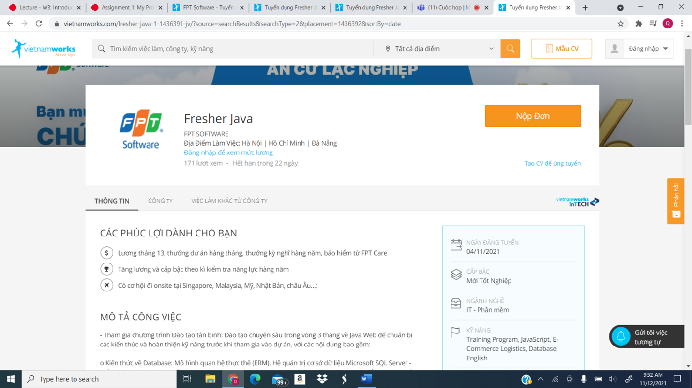
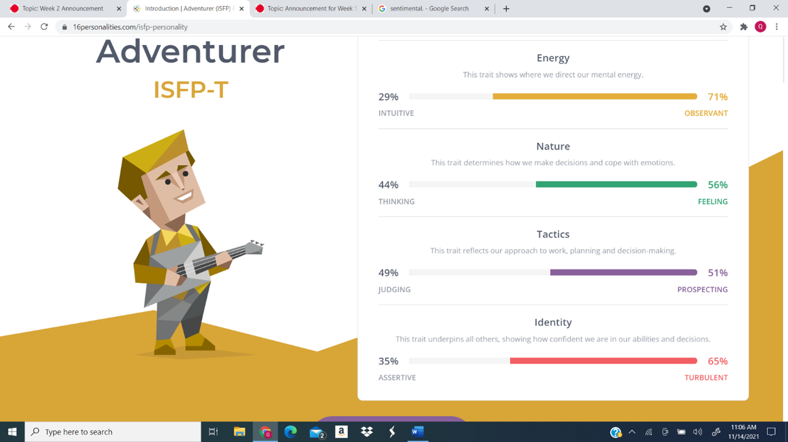
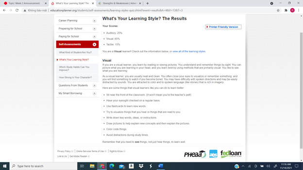
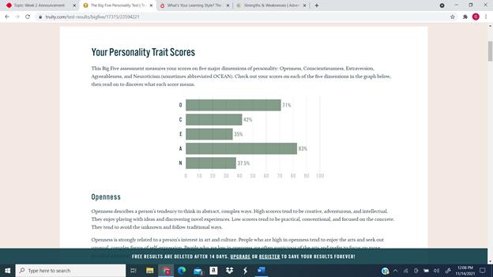

Le Anh Quan
Le Anh Quan
- Student number: s3877457
- Email: s3877457@rmit.edu.vn
- I was born in Ninh Hoa, a small district near Nha Trang city. My parents were very open minded and allow me to find my path on my own. They had first aim for me to be a doctor but after they discover my hobby in programming, they let me study for programming jobs instead. I choose software engineer as my RMIT major because I think it would help me develop my programming skill and help me make use of my English. I am quite an introvert but I am trying to improve myself to work better with my teammates. My dream is to be able to get a well-paying job so I can help provide for my parents when they get older. I like to play video games in my free time, and one of my favorite things to do with games is to mess with the code or the value of the game to break the game balance, that is what got me into software programming.
- When I got older and able to do more research, I choose IT as my major because of it just started to bloom in Vietnam, IT have the potential to explode when I graduate and I think I have qualities that are fit for IT such as focus, commitment and a willingness to change and adapt. I choose RMIT as the place to study in because of its international presence, internal environment and its great facilities and specialization in IT. It also helps that my sister is a RMIT graduate at that time and she was able to get a good job thanks to RMIT job finding support service. Even though she studied business it helps convince my parents of the opportunities that RMIT will be able to give me in the future if I graduate.
- When I got older and able to do more research, I choose IT as my major because of it just started to bloom in Vietnam, IT have the potential to explode when I graduate and I think I have qualities that are fit for IT such as focus, commitment and a willingness to change and adapt. I choose RMIT as the place to study in because of its international presence, internal environment and its great facilities and specialization in IT. It also helps that my sister is a RMIT graduate at that time and she was able to get a good job thanks to RMIT job finding support service. Even though she studied business it helps convince my parents of the opportunities that RMIT will be able to give me in the future if I graduate.
- The link: https://www.vietnamworks.com/fresher-java-1-1436391-jv/?source=searchResults&searchType=2&placement=1436392&sortBy=date (Vietnam works,2021)
- Participating in the Rookie Training program: Intensive training for 3 months on Java Web to prepare knowledge and perfect skills before participating in the project, with the following contents:
- These tests give me information about my personalities, strengths and weaknesses and my preferred learning style. After answering the questions, I can see some of my traits being correct with the traits shown. While these tests may not be entirely correct and the result may change over time as I develop, they give me a good base line so I can start working on myself. These tests shows that I am creative and observant, which means I am fit to be someone who brainstorm ideas for the team. The test also shown that I am a highly introverted person, that mean I shouldn not be a first choice if we need a spokesperson for the group and I need to work on my presentation skills and communication skills. When forming a team, I should find people who cover my weaknesses so that we can cover more areas, but I also can not let my weaknesses stop me from trying new position of taking a role that is missing in the team.
 Information
Information
 About Me
About Me
 Ideal jobs
Ideal jobs

 Personal profile
Personal profile
Some test show my personality

